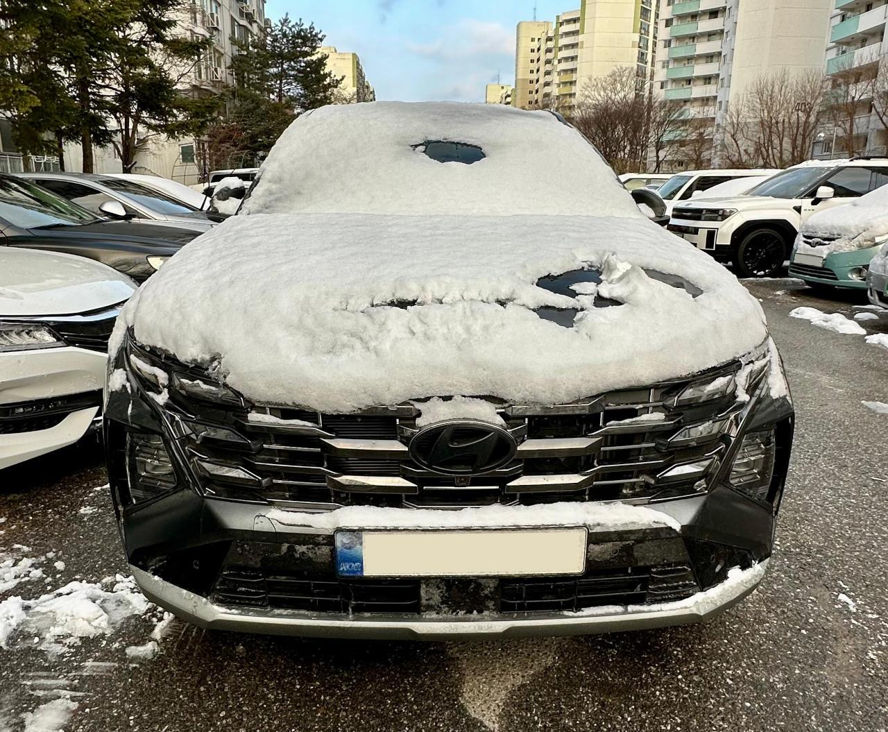
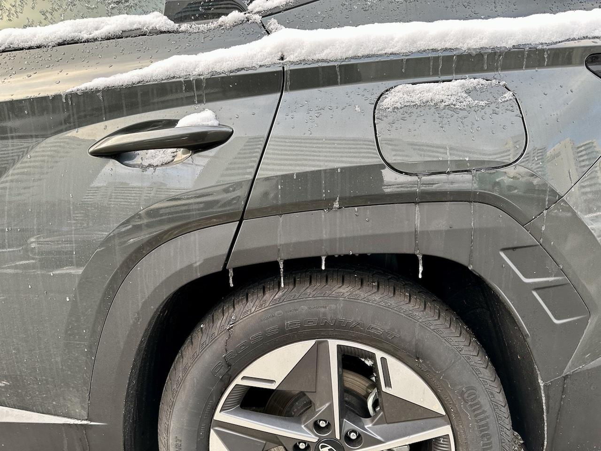

눈 오는 날 운전하는 게 이렇게 힘든 줄 몰랐다
 또 눈을 처맞은 투싼
눈이 가볍게 날리는 걸 보고 운전에 지장을 주겠다는 생각은 별로 들지 않았다. 떨어지면 바로 녹기도 하고, 좀 쌓이더라도 밤 사이 제설차의 활약으로 도로는 잘 치워져 있기도 하니 말이다. 그래서 눈 오는 날 운전을 비 오는 날 운전 쯤으로 생각하다가 경기도 오산보다도 큰 오산이라는 것을 겨우 알게 되는 경험을 하였기에 이런 글을 정리하게 되었다.
눈 오는 날 운전이 왜 힘들까?
고속도로를 포함한 중거리 운전을 해야 할 일이 생겼다. 당일 눈 예보가 있었지만 출발 시점에는 예보도 없었고 눈도 그쳤기 때문에 편안한 마음으로 운전을 시작했다.
출발하고 얼마 지나지 않아 갑자기 눈이 조금씩 내리기 시작했다. 전면 유리에 눈이 조금씩 쌓이니 자동 모드로 설정해둔 와이퍼가 알아서 치워준다. 참 편하다. 하지만 역시나 시야가 방해 받는 건 약간 답답함을 느끼게 만들었다.
그런데 어떤 차가 고속으로 앞에 끼어들며 뛰쳐 나가는 순간 이벤트가 생겼다. 공기가 특수하게 흘러서 그런지 모르겠지만 갑자기 차 앞에 눈이 몰리더니 곧이어 눈 돌풍이 생기면서 시야를 방해 받았다. 순간적으로 생긴 일이지만 깜짝 놀라며 당황할 수밖에 없었다.
눈이 점점 굵어지더니 눈발이 제법 세졌다. 그래도 아직 운행에 무리는 없는 수준이었다. 단지 제한속도를 준수하면 별 문제가 없었어야 할 수준이었다. 하지만 또 갑작스러운 이벤트가 발생한다. 앞에서 달리던 차에 쌓였던 눈이 뭉쳐지다가 갑자기 떨어지더니 바람을 타고 전면 유리에 강하게 부딪혔다. 마치 돌이 부딪히는 듯한 소리가 나면서 깜짝 놀라게 되었다. 정말 당황스러운 순간이었다.
이런저런 이벤트가 있었기에 고속도로에 올라서고 나서 크루즈컨트롤을 켜고 속도를 좀 낮춘 뒤 느긋하게 가기로 했다. 얼마 지나지 않아 눈발이 좀 세졌다. 이젠 시야가 제법 방해를 받는 수준이었기에 더욱 천천히 갈 수밖에 없었다. 그런데 또다른 이벤트가 발생했다. 레이더에 눈이 쌓였는지 갑자기 경고 알림이 뜨면서 크루즈컨트롤이 꺼지기 시작했다. 고속도로 만큼은 좀 더 편하게 가고 싶었는데 이게 무슨 날벼락인지 모르겠다.
그래도 천천히 달려서 목적지에 무사히 도착했다. 이제 주차를 해야 했다. 그런데 또 이벤트가 발생했다. 이번엔 초음파 거리 센서에도 눈이 쌓인 건지 경고 알림이 뜨면서 거리 센서가 제대로 동작하지 않았던 것이다. 결국 시야에 의존해서 주차를 해야 했는데 후방 카메라에도 눈이 쌓여서 제대로 보이지 않았다. 결국 동승자의 도움을 받아서야 겨우겨우 주차를 할 수 있었다.
이런 여러 이벤트들이 단 한 시간만에 벌어졌다는 게 아직 믿어지지 않는다. 아니면 눈 오는 날엔 이런 일들이 일상인 걸까?
물론 눈이 온 다음에도 이벤트는 이어진다
눈은 이제 그쳤다. 돌아갈 때는 좀 더 편하게 운전할 수 있을 것 같았다. 물론 오산이었다.
일단은 전면 유리와 사이드미러 그리고 후방카메라와 각종 센서에 쌓인 눈을 치워야 했다. 다만 이 정도는 일상적인 일이긴 하다.
하지만 내 차만 잘 치우면 무슨 소용일까. 고속도로 입구 가속 구간에서 앞 차 지붕에 쌓인 눈이 갑자기 쏟아지더니 눈 앞에 날아오는 날벼락 같은 상황을 경험했다. 솔직히 앞 차 지붕의 눈이 떨어질랑말랑 아슬아슬한 것을 재밌다며 구경하고 따라갔던 것 자체가 실수였던 것 같다. 지붕에 눈이 쌓여 있는 차는 뒤따라 가지 말자는 교훈을 얻었다.
고속도로에 올라가서 크루즈컨트롤을 켰다. 아니 그런데 왜 또 센서가 이상하다는 알림이 뜰까? 결국 이번에도 크루즈컨트롤의 혜택을 별로 못 받고 돌아올 수밖에 없었다. 나중에 알았는데 주행 도중에 센서에 흙탕물이 튀어서 굳은 모양이었다.
심지어 돌아와서 주차할 때 또 후방카메라에 뭔가 왕창 묻었다는 것을 알게 되었다. 여기에도 흙탕물이 튀어서 굳은 것이었다. 짜증이 일긴 했지만 그나마 초음파 센서는 동작을 해서 다행이긴 했다. 어쨌거나 후방 카메라는 청소용 티슈로 빡빡 닦아야 했을 정도로 제법 강하게 진흙이 굳어 있었다.
차는 여기저기에 흙탕물이 튀어서 난장판이었다. 그래도 세차는 눈이 완전히 녹기 전까진 포기해야 했다. 해봤자 또 더러워질 테니 말이다.
여담
눈이 완전히 그친 줄 알았지만 그날 밤에 또 눈이 왔었나 보다. 그런데 낮에는 영상이다 밤에는 영하로 떨어지다보니 녹던 눈이 얼어붙고 그 위에 눈이 쌓였나보다. 다음날 눈을 치우고 있는데 눈 아래에 얼음이 보이니 또 당황하게 되었다.
얼어붙은 전면 유리를 그냥 치우기는 불가능해 보였고 그래서 전면 유리를 데우기 위해 위해 시동을 걸었다. 그런데 갑자기 와이퍼가 큰 소리로 "삐그덕!" 거리면서 움직였다. 와이퍼는 AUTO로 세팅되어 있었는데 물이 고인 것으로 인식된 것일까? 순간 와이퍼가 박살나는 줄 알았다. 덕분에 유리에 얼음이 얼었으면 와이퍼 AUTO 모드는 끄고 시동을 걸자는 교훈을 얻게 되었다.
블랙아이스로 미끄러지는 경험을 하지는 못 했는데 못 겪어서 다행일 지도 모르겠다.
정말이지 운전자에게 눈은 흰 똥과 다름이 없었다. 재앙의 흰 똥이다. 냄새만 안 날 뿐이지 수 일 간에 걸쳐 운전자를 괴롭히는 끔찍한 흰색 똥이다.
그러니까 눈이 오면 가급적 운전은 하지 말자.
 고드름까지 피어나서 애들 교육 교재로 쓸...리는 없는 장면